Suivre une population : tendance et densité
Une alouette comptée sur 40 sites pendant 17 ans : de Quelle analyse ? à la tendance de TRIM et à sa classe, puis la densité par transects linéaires, et une figure pour le rapport.
Les données sont simulées. Aucun oiseau n'a été compté : les deux tableaux ont été fabriqués par le script suivi.R, avec des graines fixes. Les comptages contiennent un déclin connu, de 3,5 % par an dans les cultures et de 2 % dans les prairies ; les transects, une densité de 25 groupes par km².
La question et les données
L'alouette des champs est suivie au printemps sur 40 carrés de 2 km, de 2008 à 2024, comme dans un suivi des oiseaux communs. Sa population baisse-t-elle, et de combien par an ? En 2024, un inventaire par transects linéaires a été fait sur la zone d'étude (120 km²) : combien y a-t-il d'alouettes ?
comptages_alouette.csv : une ligne par site et par année (680 lignes).
| Colonne | Contenu |
|---|---|
| obs | le site et l'année (C01-2008) |
| site | C01 à C40 |
| habitat | cultures ou prairies |
| annee | 2008 à 2024 |
| alouettes | le nombre d'alouettes comptées ; vide quand le site n'a pas été suivi cette année-là (10 sites ont rejoint le suivi après 2008, et chacun manque une année sur dix environ) |
transects_alouette.csv : une ligne par alouette détectée, avec les colonnes que Nuée reconnaît pour l'échantillonnage par distances.
| Colonne | Contenu |
|---|---|
| region, aire | la zone d'étude et son aire, 120 km² |
| transect, longueur | le transect (T01 à T24) et sa longueur, en km |
| distance | la distance perpendiculaire de l'oiseau à la ligne, en m |
| taille | la taille du groupe (1 ou 2 oiseaux) |
Le transect T24, qui traverse un village, n'a aucune détection : il garde une ligne, sa distance vide, pour que sa longueur compte dans l'effort.
1. Quelle analyse ? La tendance des comptages
Ouvrez comptages_alouette.csv, puis Modèle › Quelle
analyse ?. Cochez Une tendance dans le temps, un indice de suivi, la réponse Un comptage,
et choisissez alouettes. Nuée décrit la variable (des entiers de 0 à 79, 14 % de valeurs
manquantes), propose le site et le temps d'après les noms des colonnes, et conseille TRIM.

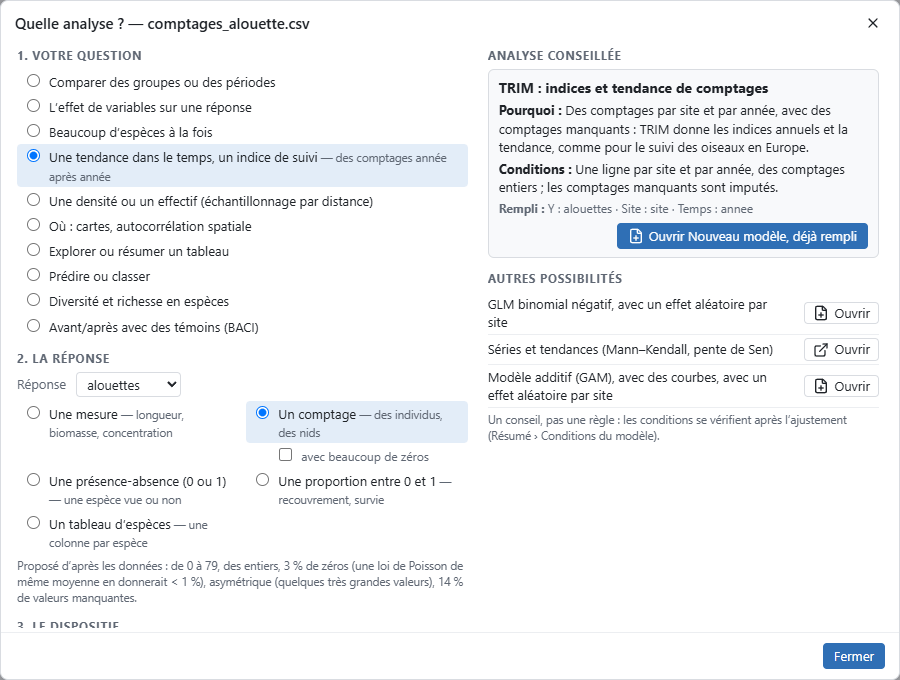

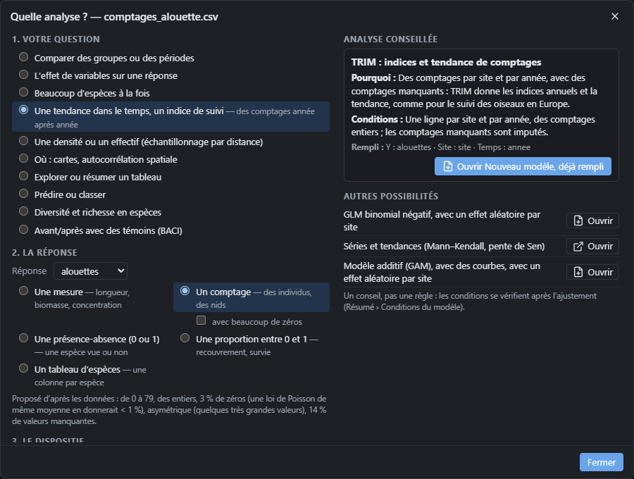
TRIM est la méthode des suivis d'oiseaux communs en Europe (Statistics Netherlands) : il estime les indices de chaque année et la tendance à partir de comptages incomplets, les comptages manquants étant imputés par le modèle. Cliquez sur Ouvrir Nouveau modèle, déjà rempli.
2. Le modèle TRIM
L'onglet Général est rempli : le site, le temps, le modèle 3 (un effet de chaque année), la surdispersion et la corrélation sérielle cochées, comme le conseille le manuel de TRIM.

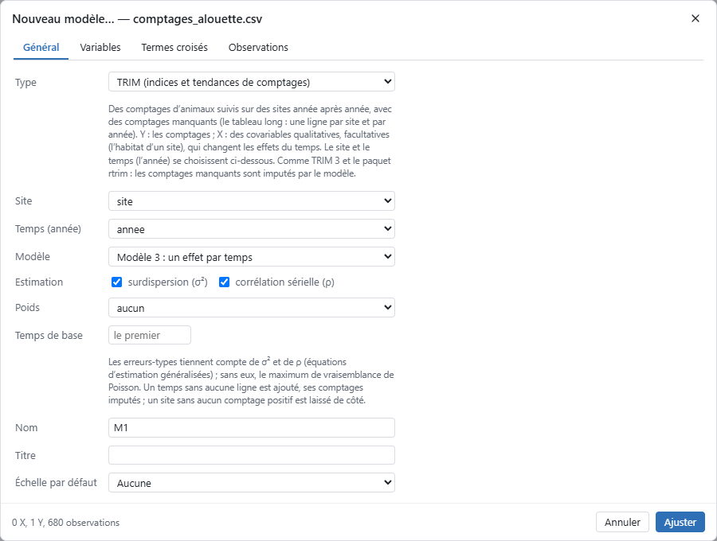

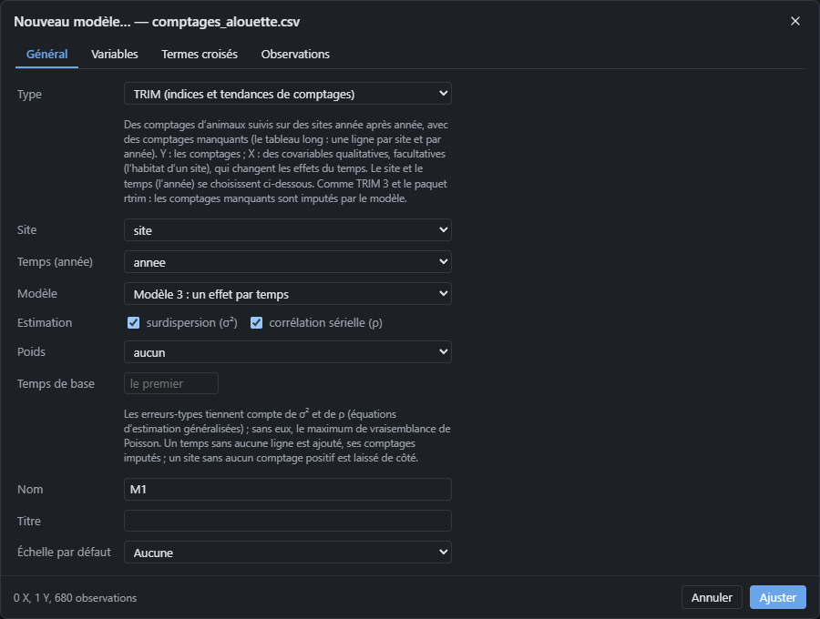
Cliquez sur Ajuster.
3. La pente globale et sa classe

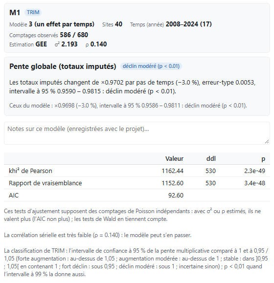

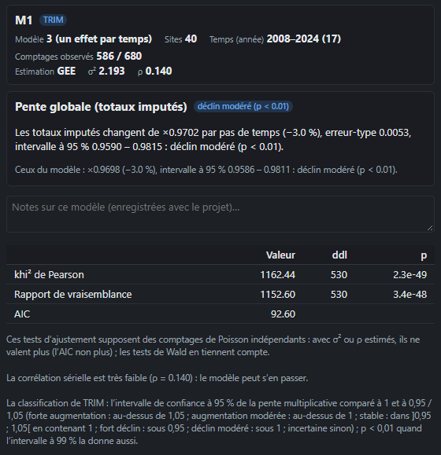
Le résumé donne d'abord le modèle : 586 comptages observés sur 680 cases site × année, les autres imputés ; une surdispersion σ² = 2,19 (les comptages varient deux fois plus qu'une loi de Poisson ne le voudrait) et une corrélation sérielle ρ = 0,14 entre deux années d'un même site, faible, comme le résumé le note.
Puis la pente globale des totaux imputés : × 0,9702 par an, soit −3,0 % par an [IC 95 % 0,9590 ; 0,9815]. Sa classe, selon les règles de TRIM : déclin modéré (p < 0,01). TRIM compare l'intervalle de la pente à 1 et à 0,95 : entièrement sous 1, mais pas sous 0,95, c'est un déclin modéré ; sous 0,95, ce serait un fort déclin.
Les tests d'ajustement (khi² de Pearson, rapport de vraisemblance) supposent des comptages de Poisson indépendants : avec σ² et ρ estimés, ils ne valent plus, comme le résumé le rappelle ; les tests de Wald, eux, en tiennent compte.
4. Les indices
La vue Indices : chaque année rapportée à la première (2008 = 1), avec la bande à 95 %. Cochez droite de la pente globale.

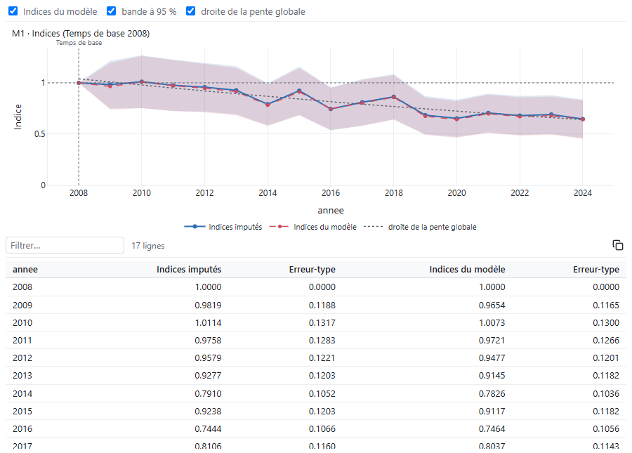

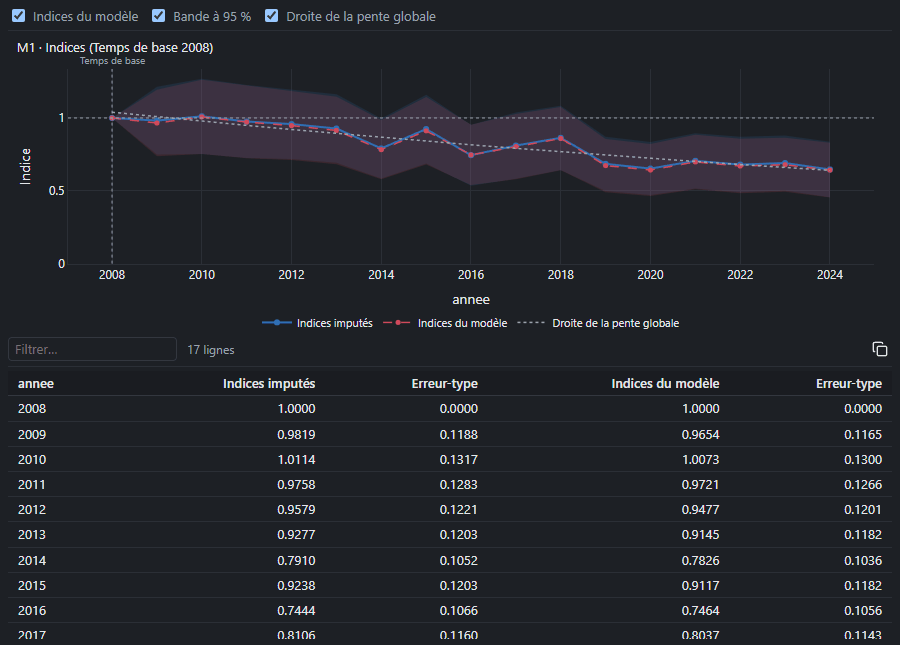
L'indice imputé passe de 1 en 2008 à 0,65 en 2024 : un tiers des alouettes en moins entre ces deux années. Le tableau sous le graphique donne chaque indice et son erreur-type ; Ctrl+C le copie pour un tableur.
5. La densité en 2024 : l'échantillonnage par distances
Ouvrez transects_alouette.csv, choisissez ce projet dans
l'explorateur, puis Modèle › Quelle analyse ? : Une densité ou un effectif (échantillonnage
par distance). Nuée propose distance comme réponse et des lignes (transects linéaires), et
remplit le transect, l'effort, l'aire et la taille des groupes d'après les noms des colonnes.

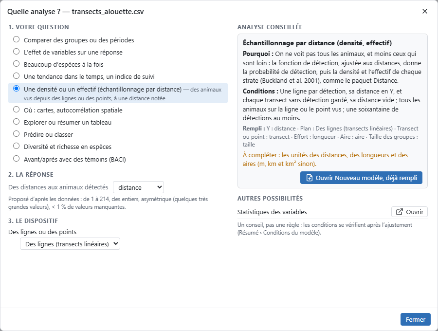

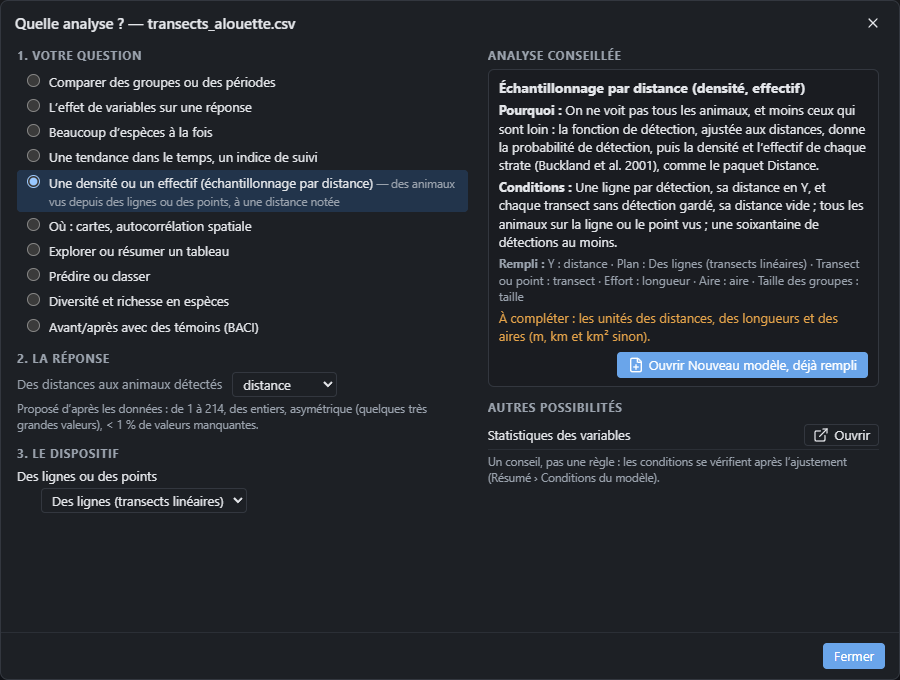
On ne voit pas tous les oiseaux, et moins ceux qui sont loin de la ligne : la fonction de détection, ajustée aux distances, donne la probabilité de détection, puis la densité. Cliquez sur Ouvrir Nouveau modèle, déjà rempli.
Dans l'onglet Général, vérifiez les unités : distances en m, longueurs en km, aires en km². Choisissez une troncature de 5 % (des plus grandes distances) : les quelques détections les plus lointaines, peu nombreuses et mal décrites, sortent du modèle, comme c'est l'usage. La clé demi-normale et les termes d'ajustement en cosinus choisis par l'AIC sont les réglages par défaut, ceux de la fonction ds() du paquet Distance.

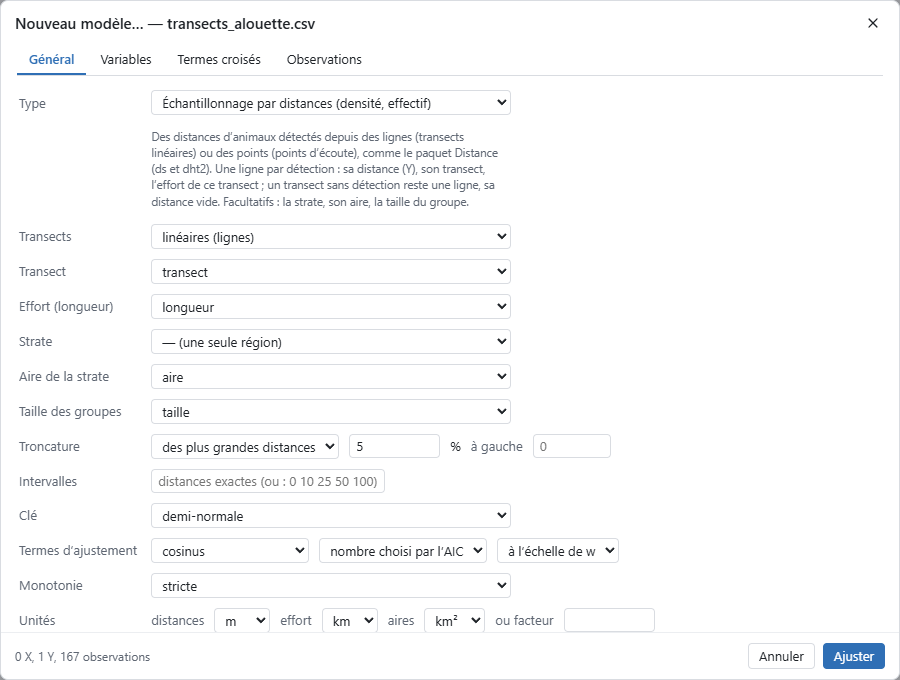

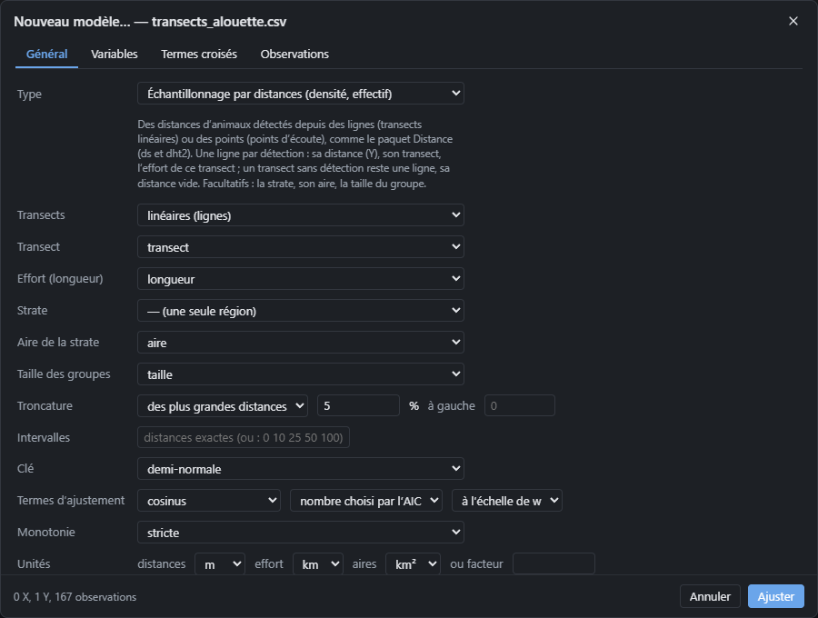
6. La fonction de détection

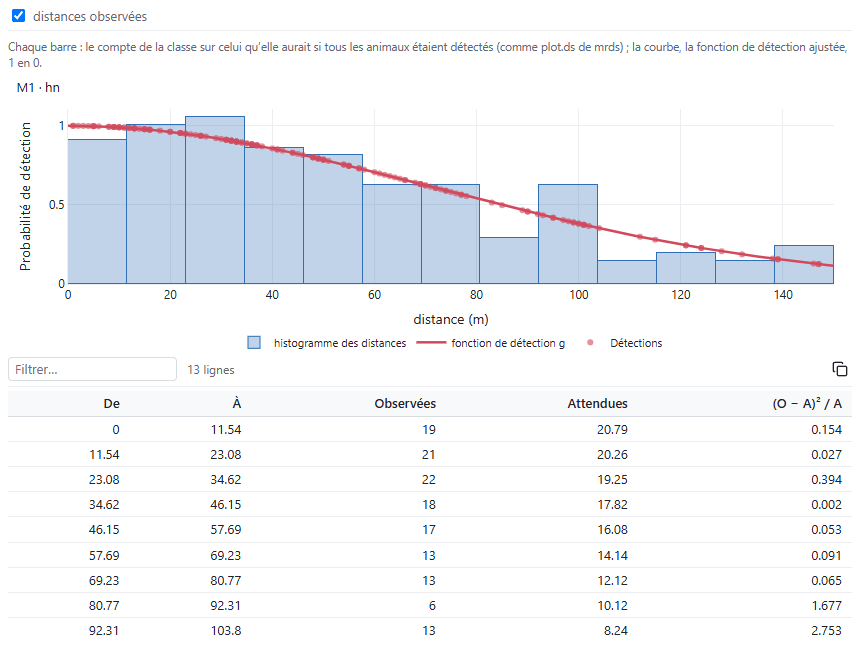

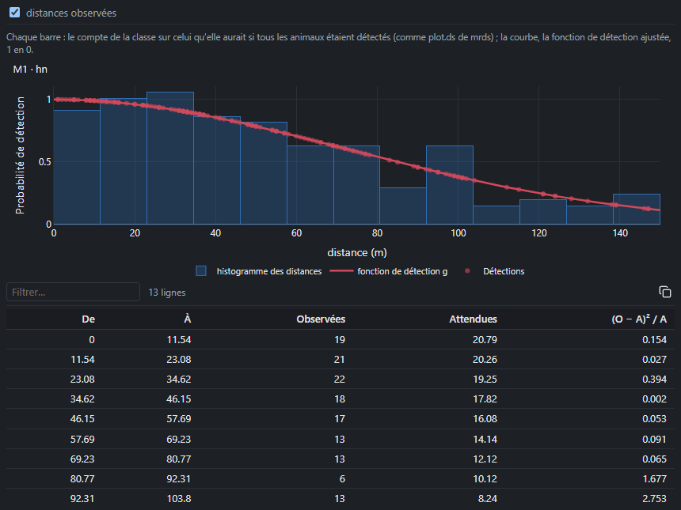
L'histogramme des distances (corrigé pour qu'une barre vaille 1 si tous les oiseaux étaient vus) suit la courbe : presque tous les oiseaux sont vus près de la ligne, une petite part à 150 m. L'AIC a gardé la clé demi-normale seule (un terme en cosinus ne la faisait pas baisser). Les tests d'adéquation (Cramér–von Mises, khi²) ne montrent pas d'écart.
7. Densité et effectif

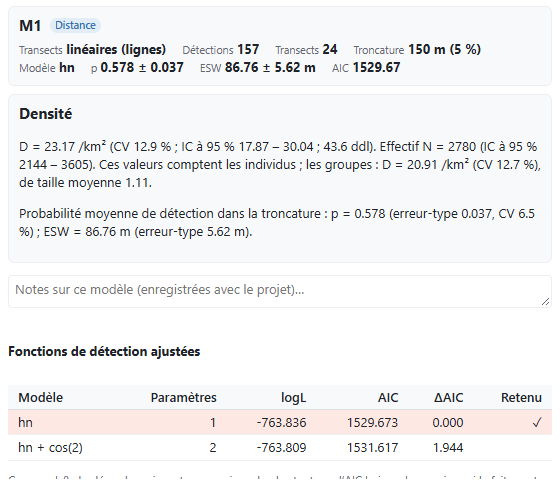

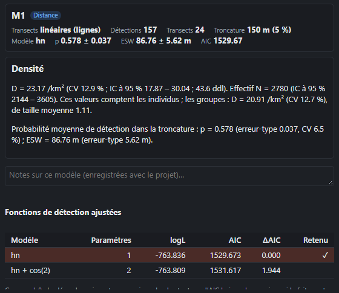
157 détections sur 24 transects (43,3 km), jusqu'à 150 m. La probabilité moyenne de détection dans la bande est p = 0,58, soit une demi-largeur effective de 87 m : on compte autant d'oiseaux que si tous ceux à moins de 87 m étaient vus, et aucun au-delà.
La densité est de 23,2 alouettes par km² (CV 12,9 % ; IC 95 % 17,9 à 30,0), soit un effectif de 2780 oiseaux (2144 à 3605) sur les 120 km². La vue Densité et effectif détaille le calcul, et la part de la variance due au taux de rencontre entre transects (72 %), à la détection et à la taille des groupes.
8. Une figure pour le rapport
Revenez au projet des comptages. Les vues Indices et Totaux de chaque temps de TRIM sont ouvertes (sinon, double-cliquez-les sous le modèle dans l'explorateur). Graphiques › Composer une figure… ouvre une figure ; Ajouter un graphique ouvert… y met l'une puis l'autre, en A et B.

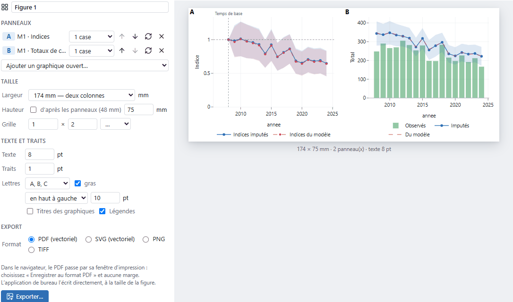

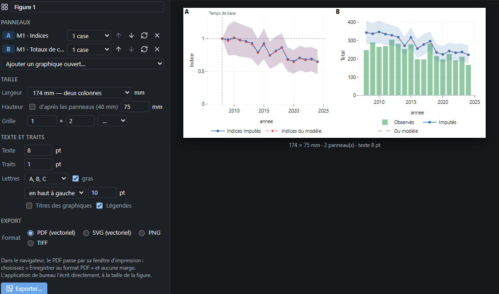
Choisissez la largeur d'une revue (174 mm, deux colonnes), une hauteur (décochez d'après les panneaux, puis 75 mm), la taille du texte une fois imprimé (8 pt), puis Exporter… en PDF ou SVG vectoriels, ou en PNG et TIFF à 300 ou 600 points par pouce. La figure est gardée dans le projet et prend toujours le dernier ajustement de chaque modèle : après un nouvel ajustement, exportez-la à nouveau.
Le texte des méthodes
Pour TRIM, Modèle › Texte pour la section Méthodes écrit, entre autres :
Les indices sont les totaux de chaque temps (imputés : les comptages observés et, pour les manquants, ceux du modèle) rapportés à celui de 2008, avec leurs erreurs-types par la méthode delta. La pente globale des totaux imputés (celle de la droite des moindres carrés à travers leur logarithme) est de 0,9702 par pas de temps (erreur-type 0,0053 ; IC à 95 % 0,9590–0,9815, loi t à 15 degrés de liberté), soit −3,0 % par pas : déclin modéré, selon la classification de TRIM (l'intervalle de confiance de la pente comparé à 1, à 0,95 et à 1,05), p < 0,001.
et pour les transects :
La densité : D = 23,17 par km² (erreur-type 3, CV 12,9 % ; IC à 95 % 17,87–30,04 ; 43,6 ddl), soit un effectif N = 2780 (IC à 95 % 2144–3605) sur 120 km².
Pour aller plus loin
- Une covariable dans TRIM (l'habitat, en X) fait varier les effets du temps d'une catégorie à l'autre ; le modèle 2 estime une tendance linéaire, avec des points de changement choisis ou pas à pas.
- Graphiques › Séries trace les comptages de chaque site au fil des années, avec les tests de tendance de Mann–Kendall et les pentes de Sen.
- Pour des points d'écoute plutôt que des lignes, choisissez points d'écoute dans le modèle.
- Le guide : Séries, TRIM et échantillonnage par distances, les figures pour publication.